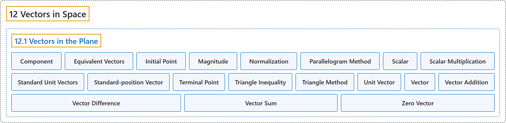

12.1 Vectors in the Plane
Classification

Glossary
| Term | Definition | 中文翻译 | Source |
|---|---|---|---|
| 12 Vectors in Space 空间向量 |
(No definition) | （无定义） | Strang & Herman, 2016c, chapter 2 |
| 12.1 Vectors in the Plane 平面向量 |
(No definition) | （无定义） | Strang & Herman, 2016c, section 2.1 |
| Component 分量 |
"a scalar that describes either the vertical or horizontal direction of a vector" | 描述向量竖直方向或水平方向的标量 | Strang & Herman, 2016c, chapter 2 Key Terms |
| Equivalent Vectors 相等向量 |
"vectors that have the same magnitude and the same direction" | 具有相同大小和相同方向的向量 | Strang & Herman, 2016c, chapter 2 Key Terms |
| Initial Point 起点 |
"the starting point of a vector" | 向量的起始点 | Strang & Herman, 2016c, chapter 2 Key Terms |
| Magnitude 模 |
"the length of a vector" | 向量的长度 | Strang & Herman, 2016c, chapter 2 Key Terms |
| Normalization 单位化 |
"using scalar multiplication to find a unit vector with a given direction" | 用数乘求给定方向的单位向量 | Strang & Herman, 2016c, chapter 2 Key Terms |
| Parallelogram Method 平行四边形法 |
"a method for finding the sum of two vectors; position the vectors so they share the same initial point; the vectors then form two adjacent sides of a parallelogram; the sum of the vectors is the diagonal of that parallelogram" | 求两个向量之和的方法；把两个向量放成共起点；这两个向量构成平行四边形的两条邻边；向量之和是该平行四边形的对角线 | Strang & Herman, 2016c, chapter 2 Key Terms |
| Scalar 标量 |
"a real number" | 一个实数 | Strang & Herman, 2016c, chapter 2 Key Terms |
| Scalar Multiplication 数乘 |
"a vector operation that defines the product of a scalar and a vector" | 定义标量与向量之积的向量运算 | Strang & Herman, 2016c, chapter 2 Key Terms |
| Standard Unit Vectors 标准单位向量 |
"unit vectors along the coordinate axes: \(\text{i}=\langle 1,0\rangle ,\text{j}=\langle 0,1\rangle\)" | 沿坐标轴的单位向量：\(\text{i}=\langle 1,0\rangle ,\text{j}=\langle 0,1\rangle\) | Strang & Herman, 2016c, chapter 2 Key Terms |
| Standard-position Vector 标准位置向量 |
"a vector with initial point \((0,0)\)" | 起点为 \((0,0)\) 的向量 | Strang & Herman, 2016c, chapter 2 Key Terms |
| Terminal Point 终点 |
"the endpoint of a vector" | 向量的终点 | Strang & Herman, 2016c, chapter 2 Key Terms |
| Triangle Inequality 三角不等式 |
"the length of any side of a triangle is less than the sum of the lengths of the other two sides" | 三角形任一边的长度小于另外两边长度之和 | Strang & Herman, 2016c, chapter 2 Key Terms |
| Triangle Method 三角形法 |
"a method for finding the sum of two vectors; position the vectors so the terminal point of one vector is the initial point of the other; these vectors then form two sides of a triangle; the sum of the vectors is the vector that forms the third side; the initial point of the sum is the initial point of the first vector; the terminal point of the sum is the terminal point of the second vector" | 求两个向量之和的方法；把向量放成一个向量的终点是另一个向量的起点；这两个向量构成三角形的两边；向量之和是构成第三边的向量；和的起点是第一个向量的起点；和的终点是第二个向量的终点 | Strang & Herman, 2016c, chapter 2 Key Terms |
| Unit Vector 单位向量 |
"a vector with margnitude \(1\)" | 大小为 \(1\) 的向量 | Strang & Herman, 2016c, chapter 2 Key Terms |
| Vector 向量 |
"a mathematical object that has both magnitude and direction" | 既有大小又有方向的数学对象 | Strang & Herman, 2016c, chapter 2 Key Terms |
| Vector Addition 向量加法 |
"a vector operation that defines the sum of two vectors" | 定义两个向量之和的向量运算 | Strang & Herman, 2016c, chapter 2 Key Terms |
| Vector Difference 向量差 |
"the vector difference \(\text{v}-\text{w}\) is defined as \(v+(-\text{w})=v+(-1)\text{w}\)" | 向量差 \(\text{v}-\text{w}\) 定义为 \(v+(-\text{w})=v+(-1)\text{w}\) | Strang & Herman, 2016c, chapter 2 Key Terms |
| Vector Sum 向量和 |
"the sum of two vectors, \(\text{v}\) and \(\text{w},\) can be constructed graphically by placing the initial point of \(\text{w}\) at the terminal point of \(\text{v};\) then the vector sum \(v+w\) is the vector with an initial point that coincides with the initial point of \(\text{v},\) and with a terminal point that coincides with the terminal point of \(\text{w}\)" | 两个向量 \(\text{v}\) 和 \(\text{w},\) 之和可以用作图构造：把 \(\text{w}\) 的起点放在 \(\text{v};\) 的终点；于是向量和 \(v+w\) 是起点与 \(\text{v},\) 的起点重合、终点与 \(\text{w}\) 的终点重合的向量 | Strang & Herman, 2016c, chapter 2 Key Terms |
| Zero Vector 零向量 |
"the vector with both initial point and terminal point \((0,0)\)" | 起点和终点都是 \((0,0)\) 的向量 | Strang & Herman, 2016c, chapter 2 Key Terms |
References
Strang, G., & Herman, E. (2016c). Calculus volume 3. OpenStax. Retrieved October 29, 2026, from https://openstax.org/details/books/calculus-volume-3